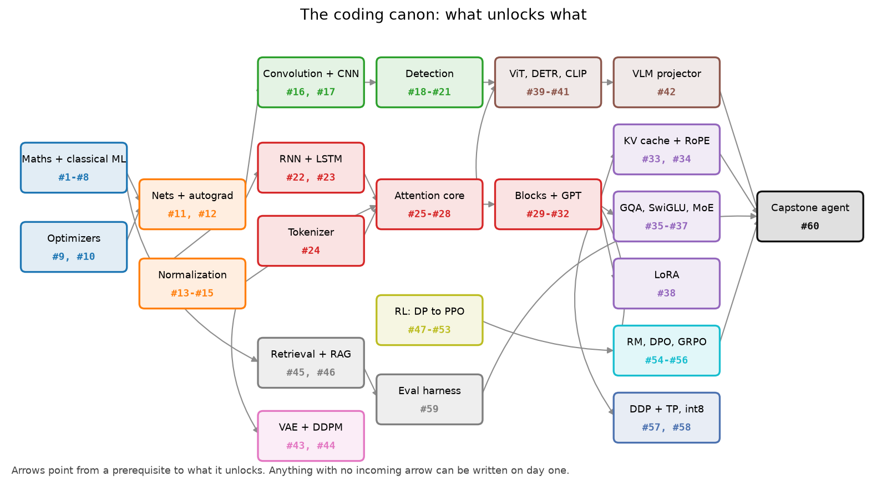
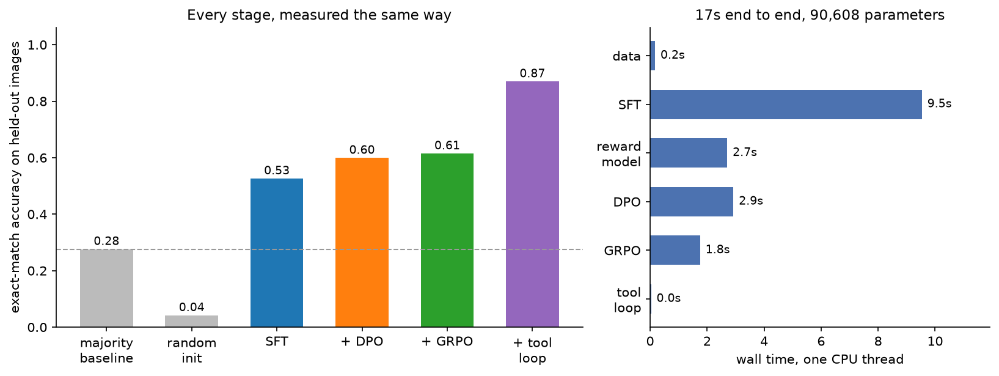
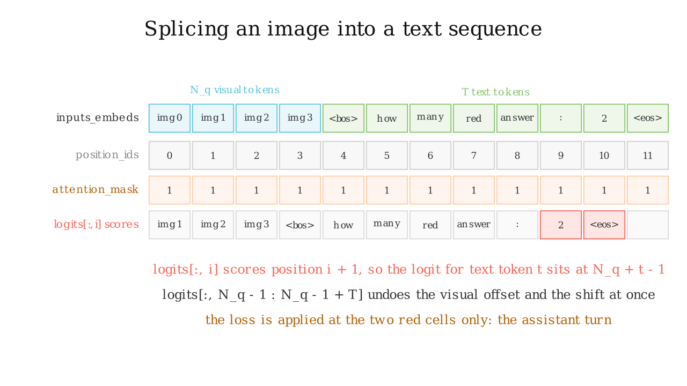

Part XVI: The coding canon¶
Why this matters at staff level. The coding round is the one part of the loop where preparation converts directly into signal. An interviewer who asks for multi-head attention with a causal mask is watching whether you write the shapes down before the code, whether you reach for the right API without stalling, and whether you can say what you would test. Sixty implementations, written from a blank file until they are boring, is what buys you that.
TL;DR: the interview card¶
- Sixty implementations, numbered the same way as the study plan. Every one has a module in
src/mlbook/and a test intests/. - The first fifty-nine come to about 22 hours of typing. The capstone (#60) adds three.
- Write from a blank file, run the reference test against your file, then delete it. Reading the module does not count.
- The five that come up most often in real loops: attention with a mask, IoU plus NMS, backprop through one layer by hand, k-means, and the DPO loss.
- Shape comment on every line that creates or reshapes a tensor. Say the shape aloud before you type it.
make drill ITEM=transformer/multiheadgives you a signature-only stub;make check ITEM=transformer/multiheadruns the reference test against it.- Sixty is not a syllabus you finish once. It is a rotation you keep turning over, five items a week, for as long as you are interviewing.
1. Why these sixty¶
Three filters produced this list.
The first is frequency. Anything that has been asked in a 45-minute coding round at an autonomy company, a consumer-ranking company or a frontier lab in the last few years is here: attention, NMS, k-means, BPE, a KV cache, a LoRA wrapper, the PPO clip, the DPO loss. If a topic has never been asked to be typed, it is not in the canon no matter how important it is to understand.
The second is compression. Each item stands in for a family. Writing scaled dot-product attention once gives you cross-attention, causal attention, GQA and the KV cache for a few extra minutes each, because they are the same three matmuls with different shapes. Writing the im2col convolution gives you the FLOP count, the backward pass and the receptive-field argument, because they all live in the same index arithmetic. The list is short because the items were chosen to overlap.
The third is testability. Every item has a reference the test can compare
against: a closed-form answer, a finite-difference gradient, a torch.nn.functional
op, or a property that has to hold (a probability sums to one, a permutation of the
input permutes the output, an advantage has zero mean within its group). An item
whose correctness you cannot check in ten seconds is an item you cannot practise.

The graph shows which items unlock which. Anything with no incoming arrow can be written on day one. The four chains that matter are the vision chain along the top (convolution, detection, ViT, projector), the sequence chain through the middle (attention, blocks, GPT, then the LLM variants), the RL chain along the bottom into post-training, and the retrieval chain into evaluation. They converge on #60.
2. The canon¶
The level column is the depth contract from asymmetric depth, applied to the topic the item implements. Level A items you should be able to write with no reference at all. Level B items you may write with the chapter open the first two times and closed after that. Nothing in the canon is below B, because typing an implementation is itself a Level B activity.
The from memory column is a target for a second or third attempt, not a first one. First attempts run about double. If your second attempt is still double the target, the item is not the problem: go back and re-derive the maths in the chapter that teaches it.
Run any row's test with the command in its column. The sandbox equivalent, which
runs the same test against your file instead of the package's, is
make check ITEM=<module path without .py>.
| # | Item | Level | Module in src/mlbook/ |
Test command | From memory | Taught in |
|---|---|---|---|---|---|---|
| 1 | Linear regression (normal equations + GD) | A | classical/linear_regression.py |
pytest tests/test_classical_linear.py |
15 min | II, Linear regression |
| 2 | Logistic regression | A | classical/logistic_regression.py |
pytest tests/test_classical_logistic.py |
20 min | II, Logistic & softmax |
| 3 | Softmax regression | A | classical/softmax_regression.py |
pytest tests/test_classical_logistic.py |
20 min | II, Logistic & softmax |
| 4 | KNN with vectorised distances | B | classical/knn.py |
pytest tests/test_classical_knn_kmeans.py |
15 min | II, KNN & K-means |
| 5 | K-means | B | classical/kmeans.py |
pytest tests/test_classical_knn_kmeans.py |
20 min | II, KNN & K-means |
| 6 | Decision tree (CART, Gini) | B | classical/decision_tree.py |
pytest tests/test_classical_trees.py |
35 min | II, Trees & ensembles |
| 7 | PCA | A | classical/pca.py |
pytest tests/test_classical_pca.py |
15 min | II, Dimensionality reduction |
| 8 | GMM with EM | B | classical/gmm.py |
pytest tests/test_classical_prob_em.py |
35 min | II, Probabilistic models & EM |
| 9 | SGD with momentum | A | optim/optimizers.py |
pytest tests/test_optim_optimizers.py |
10 min | I, Math |
| 10 | Adam and AdamW | A | optim/optimizers.py |
pytest tests/test_optim_optimizers.py |
15 min | I, Math |
| 11 | MLP forward and backward in NumPy | A | nn/mlp.py |
pytest tests/test_nn_mlp.py |
30 min | III, MLPs & activations |
| 12 | Autograd engine | A | nn/autograd.py |
pytest tests/test_nn_autograd.py |
45 min | III, Autograd engine |
| 13 | BatchNorm forward and backward | A | nn/normalization.py |
pytest tests/test_nn_normalization.py |
25 min | III, Neural nets |
| 14 | LayerNorm forward and backward | A | nn/normalization.py |
pytest tests/test_nn_normalization.py |
20 min | III, Neural nets |
| 15 | RMSNorm | A | nn/normalization_torch.py |
pytest tests/test_nn_normalization.py |
10 min | III, Neural nets |
| 16 | Convolution via im2col | A | vision/conv.py |
pytest tests/test_vision_conv.py |
30 min | IV, Convolutions |
| 17 | Tiny CNN trained end to end | A | vision/tiny_cnn.py |
pytest tests/test_vision_models.py |
20 min | IV, CNN architectures |
| 18 | IoU and box conversions | B | detection/boxes.py |
pytest tests/test_detection_boxes.py |
10 min | IV, Vision |
| 19 | NMS | B | detection/nms.py |
pytest tests/test_detection_nms.py |
15 min | IV, Vision |
| 20 | Anchor generation and matching | B | detection/anchors.py |
pytest tests/test_detection_anchors.py |
25 min | IV, Vision |
| 21 | Focal loss | B | detection/focal_loss.py |
pytest tests/test_detection_losses.py |
10 min | IV, Vision |
| 22 | RNN cell with BPTT | B | sequence/rnn.py |
pytest tests/test_sequence_rnn.py |
20 min | V, Sequences & Transformers |
| 23 | LSTM cell with BPTT | B | sequence/lstm.py |
pytest tests/test_sequence_lstm.py |
30 min | V, Sequences & Transformers |
| 24 | BPE tokenizer (train and encode) | A | transformer/tokenizer_bpe.py |
pytest tests/test_transformer_tokenizers.py |
30 min | V, Sequences & Transformers |
| 25 | Scaled dot-product attention | A | transformer/attention.py |
pytest tests/test_transformer_attention.py |
10 min | V, Sequences & Transformers |
| 26 | Multi-head attention | A | transformer/multihead.py |
pytest tests/test_transformer_multihead.py |
20 min | V, Sequences & Transformers |
| 27 | Causal and padding masks | A | transformer/masks.py |
pytest tests/test_transformer_masks.py |
10 min | V, Sequences & Transformers |
| 28 | Cross-attention | A | transformer/multihead.py |
pytest tests/test_transformer_multihead.py |
15 min | V, Sequences & Transformers |
| 29 | Transformer encoder block | A | transformer/blocks.py |
pytest tests/test_transformer_blocks.py |
20 min | V, Sequences & Transformers |
| 30 | Transformer decoder block | A | transformer/blocks.py |
pytest tests/test_transformer_blocks.py |
20 min | V, Sequences & Transformers |
| 31 | Tiny GPT end to end | A | transformer/gpt.py |
pytest tests/test_transformer_gpt.py |
45 min | V, Sequences & Transformers |
| 32 | Generation: greedy, temperature, top-k, top-p | A | transformer/generation.py |
pytest tests/test_transformer_gpt.py |
20 min | V, Sequences & Transformers |
| 33 | KV cache | B | transformer/kv_cache.py |
pytest tests/test_transformer_multihead.py |
20 min | VI, Efficient attention & KV cache |
| 34 | RoPE | A | transformer/positional.py |
pytest tests/test_transformer_positional.py |
25 min | V, Sequences & Transformers |
| 35 | Grouped-query attention | B | llm/gqa.py |
pytest tests/test_llm_gqa.py |
15 min | VI, Large-model architecture |
| 36 | SwiGLU feed-forward | B | transformer/ffn.py |
pytest tests/test_transformer_blocks.py |
10 min | VI, Large-model architecture |
| 37 | Tiny MoE with a top-k router | B | llm/moe.py |
pytest tests/test_llm_moe.py |
30 min | VI, Large-model architecture |
| 38 | LoRA wrapper | A | finetune/lora.py |
pytest tests/test_finetune_lora.py |
15 min | VI, Fine-tuning & LoRA |
| 39 | Tiny ViT | A | multimodal/vit.py |
pytest tests/test_multimodal_vit.py |
30 min | VIII, Vision Transformers |
| 40 | Hungarian matching + DETR set loss | B | multimodal/hungarian.py, multimodal/detr_loss.py |
pytest tests/test_multimodal_detr.py |
35 min | VIII, DETR |
| 41 | CLIP-style contrastive training | A | multimodal/clip.py |
pytest tests/test_multimodal_clip.py |
20 min | VIII, CLIP |
| 42 | VLM projector | B | multimodal/projectors.py |
pytest tests/test_multimodal_projectors.py |
15 min | VIII, Multimodal |
| 43 | VAE with the reparameterisation trick | B | generative/vae.py |
pytest tests/test_generative_vae.py |
25 min | Part IX, Autoencoders & VAEs |
| 44 | DDPM training and sampling | B | generative/ddpm.py |
pytest tests/test_generative_ddpm.py |
35 min | Part IX, Diffusion |
| 45 | ANN retrieval: IVF, HNSW, PQ | B | retrieval/ivf.py, retrieval/hnsw.py, retrieval/pq.py |
pytest tests/test_retrieval_ivf.py tests/test_retrieval_hnsw.py tests/test_retrieval_pq.py |
40 min | XIII, Retrieval & RAG |
| 46 | RAG pipeline | B | retrieval/rag.py |
pytest tests/test_retrieval_rag.py |
25 min | XIII, Retrieval & RAG |
| 47 | Value iteration and policy iteration | A | rl/dynamic_programming.py |
pytest tests/test_rl_dynamic_programming.py |
15 min | Part XII, MDPs & Bellman |
| 48 | Q-learning on a gridworld | A | rl/q_learning.py |
pytest tests/test_rl_q_learning.py |
20 min | Part XII, Classical RL |
| 49 | DQN with replay and a target net | B | rl/dqn.py |
pytest tests/test_rl_dqn.py |
35 min | Part XII, Deep RL & DQN |
| 50 | REINFORCE with a baseline | A | rl/reinforce.py |
pytest tests/test_rl_reinforce.py |
20 min | Part XII, Policy gradients |
| 51 | Actor-critic | A | rl/actor_critic.py |
pytest tests/test_rl_actor_critic.py |
25 min | Part XII, Policy gradients |
| 52 | GAE | A | rl/gae.py |
pytest tests/test_rl_gae.py |
15 min | Part XII, Policy gradients |
| 53 | PPO update step | A | rl/ppo.py |
pytest tests/test_rl_ppo.py |
30 min | Part XII, Policy gradients |
| 54 | Reward model with a pairwise head | A | posttrain/reward_model.py |
pytest tests/test_posttrain_reward_model.py |
20 min | VII, Reward models |
| 55 | DPO loss | A | posttrain/dpo.py |
pytest tests/test_posttrain_dpo.py |
15 min | VII, DPO and its relatives |
| 56 | Simplified GRPO / RLVR | B | posttrain/grpo.py |
pytest tests/test_posttrain_grpo.py |
25 min | VII, Post-training |
| 57 | DDP by hand + a tensor-parallel linear | B | systems/ddp_example.py, systems/tensor_parallel_toy.py |
pytest tests/test_systems_ddp.py tests/test_systems_tensor_parallel.py |
35 min | XIV, Distributed training |
| 58 | int8 weight-only quantized matmul | B | quant/qlinear.py |
pytest tests/test_quant_qlinear.py |
20 min | VI, Quantization |
| 59 | Evaluation harness with bootstrap CIs | A | evaluation/harness.py |
pytest tests/test_evaluation_harness.py |
40 min | XIII, Retrieval, eval & reliability |
| 60 | Tiny end-to-end multimodal agent | B | capstone/pipeline.py |
pytest tests/test_capstone_pipeline.py tests/test_capstone_components.py |
3 h | §6 below |
The time targets are for a second attempt
A first attempt at #12 (autograd) or #31 (tiny GPT) from a genuinely blank file takes most people 90 minutes and involves at least one silent shape bug. That is the normal shape of the curve. What you are training is the second and third attempt, because a 45-minute interview gives you one pass with no debugger and someone talking to you.
3. The order to learn them in¶
The study plan sequences all sixty across 36 weeks. If you are working through the canon on its own, the dependency order is shorter to state.
Block 1, foundations (#1 to #12). Linear regression, logistic, softmax, KNN, k-means, tree, PCA, GMM, then SGD and Adam, then the MLP and the autograd engine. Everything after this assumes you can write a training loop and check a gradient by finite differences without thinking about it.
Block 2, the layers (#13 to #21). Normalization, then convolution and a small CNN, then the four detection items. IoU before NMS before anchors, because each one consumes the last.
Block 3, attention (#22 to #34). RNN and LSTM first, so that the Transformer answers a question you have felt. Then the tokenizer, then attention in this exact order: single-head, multi-head, masks, cross-attention, blocks, GPT, generation. Add the KV cache and RoPE last, when the model they attach to already works.
Block 4, the LLM variants (#35 to #38). GQA, SwiGLU, MoE and LoRA are each a small edit to something you have already written. They are cheap here and expensive if you attempt them before #31.
Block 5, multimodal and generative (#39 to #44). ViT reuses your attention block with a patch embedding in front. DETR reuses your boxes. CLIP reuses your softmax cross-entropy on a similarity matrix. VAE and DDPM stand apart; do them when the generative chapters come up.
Block 6, retrieval and RL (#45 to #53). Retrieval and the evaluation harness pair naturally. RL runs in its own order (dynamic programming, Q-learning, DQN, REINFORCE, actor-critic, GAE, PPO) and every step there is a prerequisite for the next.
Block 7, post-training and systems (#54 to #59). Reward model, DPO, GRPO on top of your GPT from #31. DDP and the int8 matmul are independent of everything else and can be slotted anywhere.
Block 8, the capstone (#60). Only after #31, #39, #42, #54, #55, #56 and #59.
4. If you have 90 minutes a day¶
Ninety minutes is enough for one item plus its review, five days a week. The structure below is what fits in the time without rushing.
| Minutes | What you do | Why it is in the schedule |
|---|---|---|
| 0 to 10 | Re-derive yesterday's item on paper. Shapes and the one equation, no code. | Spaced repetition on the maths is what keeps the code from becoming muscle memory with no model behind it. |
| 10 to 20 | Read today's item's section 2 and section 3 in its chapter. Close the book. | Reading is the cheap part. Ten minutes is the whole budget for it. |
| 20 to 65 | make drill ITEM=..., write the implementation from the stub, run make check. |
The 45-minute block is the interview. Use a timer and stop when it rings whether or not you are done. |
| 65 to 80 | Read the reference module and diff it against what you wrote. Write down the differences. | The diff is the lesson. Most of it will be shape handling and edge cases, which is exactly what the interviewer probes. |
| 80 to 90 | Explain the item aloud as though someone asked. Two minutes of setup, five of walkthrough. | The explanation is graded in the room. Practising it silently does not transfer. |
Five items a week is twelve weeks for the canon. Interleave rather than block: do one item from a block you know well and one from a block you do not, so retrieval stays hard. Once through, restart at #1. The second pass takes about a third of the time and is where the items become automatic.
A shorter version, for the week before an interview: the week-before checklist names eleven items and about four hours total.
5. The sandbox workflow¶
The repository ships signature-only stubs of every module, described in how to use this book. The loop is four commands.
make stubs # generate or refresh every stub in practice/
make drill ITEM=transformer/multihead # print the file to edit and the tests to pass
# ... write practice/transformer/multihead.py from memory, timer running ...
make check ITEM=transformer/multihead # MLBOOK_IMPL=practice pytest tests -k multihead
make reset ITEM=transformer/multihead # wipe your attempt, restore the clean stub
MLBOOK_IMPL=practice redirects every mlbook.<area>.<module> import to
practice/<area>/<module>.py when that file exists and to the reference when it
does not. One module at a time is therefore practisable without breaking the rest
of the package: your practice/transformer/multihead.py gets imported by the real
transformer/blocks.py, so if your attention is subtly wrong, the block test fails
too and tells you where.
Three habits make the sandbox work.
Delete your attempt after it passes. make reset exists for this. A file you
can peek at is a file you will peek at, and the item is not learned until you can
produce it twice on different days.
Run the check before you think you are done. The failure message is free information about which shape is wrong. Interviewers watch for candidates who write sixty lines before running anything.
Keep a miss log. One line per item per attempt: what you got wrong. After three
passes the log has maybe fifteen recurring entries (transposing K, forgetting
keepdims, the -inf padding row, the off-by-one in the label shift), and those
fifteen are your actual study list.
6. Canon #60: the capstone¶
Items #1 to #59 are pieces. #60 is the assembly: a vision encoder, a projector, a
causal LM, the three post-training stages, and an agent loop that can call a tool.
It lives in src/mlbook/capstone/ and is self-contained, importing nothing from
the rest of mlbook, so it reads front to back.
flowchart LR
I[Image 16x16<br/>coloured shapes on a 4x4 grid] --> V[Tiny ViT<br/>16 patches, d_v=32]
V --> P[Projector<br/>16 to 8 tokens, d=48]
Q[Question tokens] --> M
P --> M[Causal LM<br/>2 blocks, V=28]
M --> A[Answer token]
A --> R{Verifier}
R -->|reward| POST[SFT, reward model, DPO, GRPO]
POST --> M
M --> T[Tool loop<br/>count_shapes]The task is a board of coloured squares and circles, one per cell, with questions like "how many red squares" and "what colour is the largest shape". Answers are computed from the scene graph that drew the image, which is what makes the reward verifiable: no annotator, no judge model, no possibility of the policy learning to please a proxy.

The left panel is the reason the capstone is worth three hours. Each stage moves a number you measured the same way, and among the post-training stages the biggest single jump comes from the agent loop, not from any of the three that touch the weights. The right panel is the cost: under twenty seconds for the whole pipeline on one CPU thread, which is what makes it possible to change one thing and rerun.
from mlbook.capstone.pipeline import run_pipeline, format_report
report = run_pipeline()
print(format_report(report))
Five things in it are worth more interview attention than the rest.
The splice and the off-by-one. TinyVLM.build_inputs concatenates N_q visual
tokens in front of T text tokens, prepends N_q ones to the attention mask, and
builds position_ids as arange(N_q + T). Because logits[:, i] predicts token
i + 1, the logit that scores text token t sits at index N_q + t - 1. The
slice logits[:, N_q - 1 : N_q - 1 + T] undoes both offsets at once. Getting this
wrong shifts the loss by one token, and the model still trains, just to the wrong
thing.

Read the bottom row of the figure against the top one. The logit at the : cell is
the one that scores the answer token, and the two red cells are the only positions
the SFT loss touches.
The mask value. causal_padding_bias fills disallowed positions with -1e9
rather than -inf. A right-padded batch has query rows whose every key is masked,
and softmax of an all--inf row returns NaN, which then propagates through the
whole backward pass. Under fp16 anything below about -6.5e4 overflows to -inf
anyway, which is why production code uses torch.finfo(dtype).min.
On-policy negatives. make_preference_pairs(examples, policy=model) samples a
response from the SFT policy and keeps it as the rejected answer when the verifier
scores it zero, falling back to a random wrong token where the policy was already
right. That is rejection sampling, the recipe Llama 2 used to build preference
sets. Random negatives cost about 6 points of accuracy against on-policy ones in
this pipeline, because the gradient lands on mistakes the model was never going to
make.
Degenerate groups. With a binary verifier, a GRPO group whose samples all
scored the same has zero advantage everywhere, so it contributes no gradient while
costing a full generation and two forward passes. After SFT on this task, 59% of
groups at G = 4 are all-right or all-wrong. run_grpo therefore draws four times
as many prompts as it needs and keeps the groups that survive
informative_groups, which is DAPO's dynamic sampling.
Sampling temperature against decode temperature. GRPO maximises the expected reward of a sample, so the temperature you sample the group at is part of the objective. Sampling at 1.0 and evaluating greedily optimises a distribution you never serve: over five seeds the mean accuracy change was -0.004 at temperature 1.0 and +0.019 at 0.7.
The whole pipeline, src/mlbook/capstone/pipeline.py
"""Canon #60, part 9 -- the whole pipeline in one function.
``run_pipeline()`` builds the data, builds the model, and runs
SFT -> reward model -> DPO -> GRPO (verifiable reward) -> agent loop
measuring task accuracy after every stage. There is no pretraining: SFT starts
from random weights, which is the one compression this capstone makes so the
whole thing finishes in a few seconds on a CPU.
The report it returns is the artefact. Run it before and after any change you
make to a stage and read the accuracy column: a post-training stage that does
not move the number is either misconfigured or unnecessary, and being able to
say which is most of what a post-training job is.
"""
from __future__ import annotations
import time
from dataclasses import asdict, dataclass
import torch
from mlbook.capstone import synthetic_task as task
from mlbook.capstone.multimodal_model import TinyVLM, count_parameters
from mlbook.capstone.preference_stage import freeze_reference, run_dpo, run_grpo
from mlbook.capstone.reward_stage import TinyRewardModel, make_preference_pairs, reward_pair_accuracy, train_reward_model
from mlbook.capstone.sft_stage import accuracy, run_sft
from mlbook.capstone.tool_loop import run_episodes, trajectory_report
@dataclass
class PipelineConfig:
"""Every knob, in one place, with the defaults that finish in seconds."""
seed: int = 0
n_train: int = 768
n_eval: int = 192
torch_threads: int = 1
"""Intra-op threads. Every tensor here is a few kilobytes, so the threading
overhead of a parallel kernel costs far more than the kernel saves: on the
machine this was developed on, four threads made one training step about
250x slower than one thread. Set it to 0 to leave the global setting alone."""
d_v: int = 32
vision_heads: int = 2
vision_layers: int = 2
d_llm: int = 48
lm_heads: int = 4
lm_layers: int = 2
n_query_tokens: int = 8
sft_steps: int = 400
sft_batch_size: int = 48
sft_lr: float = 3e-3
tool_fraction: float = 0.35
rm_steps: int = 80
rm_batch_size: int = 32
rm_lr: float = 1e-3
dpo_steps: int = 80
dpo_batch_size: int = 24
dpo_lr: float = 2e-4
dpo_beta: float = 0.1
grpo_steps: int = 30
grpo_prompts_per_step: int = 6
grpo_group_size: int = 8
grpo_oversample: int = 4
"""Prompts drawn per step, as a multiple of ``grpo_prompts_per_step``. Only
groups whose samples did not all score the same survive into the batch, so
the extra draws are what keep the batch full."""
grpo_lr: float = 3e-4
grpo_temperature: float = 0.7
"""Sampling temperature for the group. GRPO maximises the expected reward of
a *sample*, so a temperature far from the one you decode at optimises a
distribution you never serve: at 1.0 the mean accuracy change over five
seeds was -0.004, at 0.7 it was +0.019."""
grpo_kl_coef: float = 0.02
tool_confidence: float = 0.9
def build_model(config: PipelineConfig) -> TinyVLM:
"""Construct the VLM at the configured widths, on the configured seed."""
torch.manual_seed(config.seed)
return TinyVLM(
vocab_size=task.VOCAB_SIZE,
image_size=task.IMAGE_SIZE,
patch_size=task.CELL,
in_channels=3,
d_v=config.d_v,
vision_heads=config.vision_heads,
vision_layers=config.vision_layers,
d_llm=config.d_llm,
lm_heads=config.lm_heads,
lm_layers=config.lm_layers,
n_query_tokens=config.n_query_tokens,
max_text_len=task.MAX_TEXT_LEN,
)
def majority_baseline(train: list[task.Example], evaluation: list[task.Example]) -> float:
"""Accuracy of always answering the most frequent training answer.
Any stage that does not beat this has learned nothing about the images, and
printing it next to the model's accuracy is the cheapest sanity check there
is.
"""
counts: dict[str, int] = {}
for ex in train:
counts[ex.answer] = counts.get(ex.answer, 0) + 1
best = max(counts, key=lambda a: counts[a])
return sum(1 for ex in evaluation if ex.answer == best) / max(len(evaluation), 1)
def run_pipeline(config: PipelineConfig | None = None, verbose: bool = False) -> dict[str, object]:
"""Run every stage end to end and return a report dict.
Report keys: ``accuracy`` (per stage), ``sft``, ``reward_model``, ``dpo``,
``grpo``, ``tool_loop``, ``params``, ``tokens``, ``wall_time_s``, ``config``.
"""
config = PipelineConfig() if config is None else config
previous_threads = torch.get_num_threads()
if config.torch_threads:
torch.set_num_threads(config.torch_threads)
try:
return _run_pipeline(config, verbose)
finally:
torch.set_num_threads(previous_threads)
def _run_pipeline(config: PipelineConfig, verbose: bool) -> dict[str, object]:
"""The body of :func:`run_pipeline`, with the thread setting already applied."""
torch.manual_seed(config.seed)
timings: dict[str, float] = {}
t_start = time.perf_counter()
t0 = time.perf_counter()
train = task.make_dataset(config.n_train, seed=config.seed)
evaluation = task.make_dataset(config.n_eval, seed=config.seed + 10_000)
timings["data"] = time.perf_counter() - t0
model = build_model(config)
acc: dict[str, float] = {"majority_baseline": majority_baseline(train, evaluation)}
acc["random_init"] = accuracy(model, evaluation)
t0 = time.perf_counter()
sft_report = run_sft(
model, train,
steps=config.sft_steps, batch_size=config.sft_batch_size,
lr=config.sft_lr, tool_fraction=config.tool_fraction, seed=config.seed,
)
timings["sft"] = time.perf_counter() - t0
acc["sft"] = accuracy(model, evaluation)
t0 = time.perf_counter()
train_pairs = make_preference_pairs(train, seed=config.seed, policy=model)
eval_pairs = make_preference_pairs(evaluation, seed=config.seed + 1, policy=model)
rm = TinyRewardModel.from_policy(model)
rm_report = train_reward_model(
rm, train_pairs, steps=config.rm_steps,
batch_size=config.rm_batch_size, lr=config.rm_lr, seed=config.seed,
)
rm_report["pair_accuracy"] = reward_pair_accuracy(rm, eval_pairs)
timings["reward_model"] = time.perf_counter() - t0
t0 = time.perf_counter()
dpo_reference = freeze_reference(model)
dpo_report = run_dpo(
model, dpo_reference, train_pairs,
steps=config.dpo_steps, batch_size=config.dpo_batch_size,
lr=config.dpo_lr, beta=config.dpo_beta, seed=config.seed,
)
timings["dpo"] = time.perf_counter() - t0
acc["dpo"] = accuracy(model, evaluation)
t0 = time.perf_counter()
grpo_reference = freeze_reference(model)
grpo_report = run_grpo(
model, grpo_reference, train,
steps=config.grpo_steps, prompts_per_step=config.grpo_prompts_per_step,
group_size=config.grpo_group_size, oversample=config.grpo_oversample,
lr=config.grpo_lr, kl_coef=config.grpo_kl_coef,
temperature=config.grpo_temperature, seed=config.seed,
)
timings["grpo"] = time.perf_counter() - t0
acc["grpo"] = accuracy(model, evaluation)
t0 = time.perf_counter()
trajectories = run_episodes(model, evaluation, confidence_threshold=config.tool_confidence)
tool_report = trajectory_report(trajectories)
timings["tool_loop"] = time.perf_counter() - t0
acc["tool_loop"] = tool_report["accuracy"]
timings["total"] = time.perf_counter() - t_start
report: dict[str, object] = {
"accuracy": acc,
"sft": {k: v for k, v in sft_report.items() if k != "losses"},
"reward_model": {k: v for k, v in rm_report.items() if k != "losses"},
"dpo": {k: v for k, v in dpo_report.items() if k not in ("losses", "margins")},
"grpo": {k: v for k, v in grpo_report.items() if k not in ("losses", "mean_rewards")},
"tool_loop": tool_report,
"params": {
"total": count_parameters(model),
"vision": count_parameters(model.vision),
"projector": count_parameters(model.projector),
"lm": count_parameters(model.lm),
},
"tokens": {
"vocab_size": task.VOCAB_SIZE,
"visual_tokens_per_image": model.n_query_tokens,
"patches_per_image": model.vision.n_tokens,
"supervised_tokens": sft_report["supervised_tokens"],
},
"wall_time_s": {k: round(v, 3) for k, v in timings.items()},
"config": asdict(config),
}
if verbose:
print(format_report(report))
return report
def format_report(report: dict[str, object]) -> str:
"""Pretty-print the accuracy column and the timings."""
acc = report["accuracy"] # type: ignore[index]
lines = ["stage accuracy"]
for name in ("majority_baseline", "random_init", "sft", "dpo", "grpo", "tool_loop"):
lines.append(f"{name:<18}{acc[name]:.3f}") # type: ignore[index]
lines.append("")
lines.append(f"parameters: {report['params']['total']:,}") # type: ignore[index]
lines.append(f"wall time: {report['wall_time_s']['total']:.1f}s") # type: ignore[index]
return "\n".join(lines)
if __name__ == "__main__":
run_pipeline(verbose=True)
Splicing the modalities, src/mlbook/capstone/multimodal_model.py
"""Canon #60, part 4 -- the VLM: splice visual tokens in front of the text tokens.
This is the whole of the LLaVA-style architecture in one class. The only
subtlety worth an interview is *bookkeeping*, and it is done explicitly here:
* the visual tokens occupy absolute positions ``0 .. N_q-1`` and the text tokens
``N_q .. N_q+T-1``, so ``position_ids`` is built by hand;
* the attention mask is the text mask with ``N_q`` ones prepended, because the
image is never padding;
* ``logits[:, i]`` predicts the token at ``i + 1``, so the logit that scores
text token ``t`` lives at index ``N_q + t - 1``. Getting that off by one is the
single most common bug in a from-scratch VLM.
Shapes: ``B`` batch, ``N_q`` visual tokens after the projector, ``T`` text
tokens, ``S = N_q + T`` total, ``d`` LLM width, ``V`` vocabulary.
"""
from __future__ import annotations
import torch
import torch.nn as nn
from mlbook.capstone.projector import Projector
from mlbook.capstone.tiny_lm import TinyCausalLM, sample_next_token
from mlbook.capstone.tiny_vision_encoder import TinyVisionEncoder
class TinyVLM(nn.Module):
"""Vision encoder + projector + causal LM, trained jointly (nothing is frozen here)."""
def __init__(
self,
vocab_size: int,
image_size: int = 16,
patch_size: int = 4,
in_channels: int = 3,
d_v: int = 32,
vision_heads: int = 2,
vision_layers: int = 2,
d_llm: int = 48,
lm_heads: int = 4,
lm_layers: int = 2,
n_query_tokens: int = 8,
max_text_len: int = 16,
) -> None:
super().__init__()
self.vision = TinyVisionEncoder(image_size, patch_size, in_channels, d_v, vision_heads, vision_layers)
self.projector = Projector(d_v, d_llm, self.vision.n_tokens, n_query_tokens)
self.lm = TinyCausalLM(
vocab_size=vocab_size,
d_model=d_llm,
n_heads=lm_heads,
n_layers=lm_layers,
max_positions=n_query_tokens + max_text_len,
)
self.n_query_tokens = n_query_tokens
self.max_text_len = max_text_len
self.vocab_size = vocab_size
# -- assembling the input sequence ----------------------------------------
def visual_embeds(self, images: torch.Tensor) -> torch.Tensor:
"""``(B, C, H, W)`` -> ``(B, N_q, d)`` tokens the LM can consume."""
visual_tokens = self.vision(images) # (B, N_v, d_v)
return self.projector(visual_tokens) # (B, N_q, d)
def build_inputs(
self,
images: torch.Tensor,
input_ids: torch.Tensor,
attention_mask: torch.Tensor | None = None,
) -> tuple[torch.Tensor, torch.Tensor, torch.Tensor]:
"""Splice the two modalities into one sequence.
Returns ``(inputs_embeds (B, S, d), attention_mask (B, S), position_ids (B, S))``.
"""
B, T = input_ids.shape # (B, T)
device = input_ids.device
if attention_mask is None:
attention_mask = torch.ones(B, T, dtype=torch.long, device=device) # (B, T)
vis = self.visual_embeds(images) # (B, N_q, d)
txt = self.lm.embed_tokens(input_ids) # (B, T, d)
inputs_embeds = torch.cat([vis, txt], dim=1) # (B, S, d)
vis_mask = torch.ones(B, self.n_query_tokens, dtype=attention_mask.dtype, device=device) # (B, N_q)
full_mask = torch.cat([vis_mask, attention_mask], dim=1) # (B, S)
S = self.n_query_tokens + T
position_ids = torch.arange(S, device=device).expand(B, S) # (B, S)
return inputs_embeds, full_mask, position_ids
# -- forward passes --------------------------------------------------------
def hidden_states(
self,
images: torch.Tensor,
input_ids: torch.Tensor,
attention_mask: torch.Tensor | None = None,
) -> torch.Tensor:
"""``(B, S, d)`` final hidden states over the spliced sequence."""
inputs_embeds, full_mask, position_ids = self.build_inputs(images, input_ids, attention_mask)
return self.lm.encode(inputs_embeds, full_mask, position_ids) # (B, S, d)
def forward(
self,
images: torch.Tensor,
input_ids: torch.Tensor,
attention_mask: torch.Tensor | None = None,
) -> torch.Tensor:
"""``(B, S, V)`` logits over the whole spliced sequence; entry ``i`` predicts position ``i+1``."""
h = self.hidden_states(images, input_ids, attention_mask) # (B, S, d)
return self.lm.lm_head(h) # (B, S, V)
def text_logits(
self,
images: torch.Tensor,
input_ids: torch.Tensor,
attention_mask: torch.Tensor | None = None,
) -> torch.Tensor:
"""Teacher-forcing view: ``(B, T, V)`` where entry ``t`` scores **text token ``t``**.
The slice ``[N_q - 1 : N_q - 1 + T]`` undoes the next-token shift *and*
the visual offset in one step, so every loss downstream can index text
positions directly.
"""
logits = self.forward(images, input_ids, attention_mask) # (B, S, V)
T = input_ids.shape[1]
start = self.n_query_tokens - 1
return logits[:, start:start + T, :] # (B, T, V)
# -- generation ------------------------------------------------------------
@torch.no_grad()
def generate(
self,
images: torch.Tensor,
prompt_ids: torch.Tensor,
max_new_tokens: int = 2,
greedy: bool = True,
temperature: float = 1.0,
top_k: int | None = None,
eos_id: int | None = None,
attention_mask: torch.Tensor | None = None,
generator: torch.Generator | None = None,
) -> torch.Tensor:
"""Answer a question about an image. ``(B, T_p)`` prompt -> ``(B, max_new_tokens)`` new ids.
The next token after the prompt is scored by the **last** logit of the
spliced sequence, which is why this uses :meth:`forward` and not
:meth:`text_logits`.
"""
ids = prompt_ids # (B, T_p)
mask = torch.ones_like(ids) if attention_mask is None else attention_mask # (B, T_p)
generated = []
finished = torch.zeros(ids.shape[0], dtype=torch.bool, device=ids.device) # (B,)
for _ in range(max_new_tokens):
logits = self.forward(images, ids, mask)[:, -1, :] # (B, V)
next_id = sample_next_token(logits, greedy, temperature, top_k, generator) # (B,)
if eos_id is not None:
next_id = torch.where(finished, torch.full_like(next_id, eos_id), next_id) # (B,)
finished = finished | (next_id == eos_id) # (B,)
generated.append(next_id)
ids = torch.cat([ids, next_id[:, None]], dim=1) # (B, T_p + 1)
mask = torch.cat([mask, torch.ones_like(next_id)[:, None]], dim=1) # (B, T_p + 1)
return torch.stack(generated, dim=1) # (B, max_new_tokens)
def count_parameters(model: nn.Module) -> int:
"""Total number of trainable parameters."""
return sum(p.numel() for p in model.parameters() if p.requires_grad)
DPO and GRPO, src/mlbook/capstone/preference_stage.py
"""Canon #60, part 7 -- DPO and a simplified GRPO, each as one small function.
Both algorithms optimise the same KL-regularised objective
``max_pi E_{y ~ pi}[r(x, y)] - beta * KL(pi || pi_ref)``
and they differ in what stands in for ``r``.
DPO never builds a reward model. The optimum of the objective above is
``pi*(y|x) = pi_ref(y|x) exp(r(x,y)/beta) / Z(x)``; invert it for ``r``,
substitute into Bradley-Terry, and ``Z(x)`` cancels because it depends only on
``x``. What is left is a classification loss on the difference of two log
ratios, computable with two forward passes of the policy and two of the frozen
reference.
GRPO keeps the RL loop but drops the critic. Sample a group of ``G`` responses
per prompt, score each with the verifier, and use the group-normalised reward as
every token's advantage. The baseline is the group mean, which is what makes the
advantages sum to zero within a group and is why GRPO needs no value network.
Shapes: ``P`` prompts per step, ``G`` samples per prompt, ``B = P * G`` rows.
"""
from __future__ import annotations
import copy
import numpy as np
import torch
import torch.nn.functional as F
from mlbook.capstone import synthetic_task as task
from mlbook.capstone.multimodal_model import TinyVLM
from mlbook.capstone.reward_stage import PreferencePair, verifier_rewards
from mlbook.capstone.sft_stage import SFTBatch, encode_batch, next_token_logits
def freeze_reference(model: TinyVLM) -> TinyVLM:
"""Deep-copy a policy and freeze it. The result is ``pi_ref`` for DPO and GRPO."""
ref = copy.deepcopy(model)
ref.eval()
for p in ref.parameters():
p.requires_grad_(False)
return ref
def sequence_logprob(model: TinyVLM, batch: SFTBatch) -> torch.Tensor:
"""Summed log-probability of the assistant tokens. Returns ``(B,)``.
``log pi(y | x) = sum_t log pi(y_t | x, y_<t)``, restricted to the positions
``loss_mask`` marks. Prompt tokens contribute nothing, which is what makes
the DPO log ratio a property of the response.
"""
logits = model.text_logits(batch.images, batch.input_ids, batch.attention_mask) # (B, T, V)
logprobs = F.log_softmax(logits, dim=-1) # (B, T, V)
token_logp = logprobs.gather(-1, batch.input_ids[:, :, None])[:, :, 0] # (B, T)
return (token_logp * batch.loss_mask).sum(dim=1) # (B,)
# ---------------------------------------------------------------------------
# DPO
# ---------------------------------------------------------------------------
def dpo_loss(
policy_chosen: torch.Tensor,
policy_rejected: torch.Tensor,
ref_chosen: torch.Tensor,
ref_rejected: torch.Tensor,
beta: float = 0.1,
) -> tuple[torch.Tensor, torch.Tensor]:
"""The DPO objective. All inputs ``(B,)`` summed log-probabilities.
Returns ``(loss, margin)`` where
``margin = (log pi(y_w) - log pi_ref(y_w)) - (log pi(y_l) - log pi_ref(y_l))``
is the difference of implicit rewards divided by ``beta``, and
``loss = -log sigma(beta * margin)``.
Training drives ``margin`` up. Watch it rather than the loss: the loss also
falls when the policy pushes ``log pi(y_l)`` down without raising
``log pi(y_w)``, which is the well-known DPO failure of degrading both.
"""
margin = (policy_chosen - ref_chosen) - (policy_rejected - ref_rejected) # (B,)
loss = -F.logsigmoid(beta * margin).mean()
return loss, margin
@torch.no_grad()
def mean_dpo_margin(policy: TinyVLM, reference: TinyVLM, pairs: list[PreferencePair]) -> float:
"""Mean implicit-reward margin over a set of pairs, in nats."""
examples = [p.example for p in pairs]
chosen = encode_batch(examples, answers=[p.chosen for p in pairs])
rejected = encode_batch(examples, answers=[p.rejected for p in pairs])
_, margin = dpo_loss(
sequence_logprob(policy, chosen),
sequence_logprob(policy, rejected),
sequence_logprob(reference, chosen),
sequence_logprob(reference, rejected),
)
return float(margin.mean())
def run_dpo(
policy: TinyVLM,
reference: TinyVLM,
pairs: list[PreferencePair],
steps: int = 120,
batch_size: int = 32,
lr: float = 3e-4,
beta: float = 0.1,
seed: int = 0,
) -> dict[str, object]:
"""Run DPO on the frozen reference. Returns the loss curve and the margin before/after."""
rng = np.random.default_rng(seed)
optimizer = torch.optim.AdamW(policy.parameters(), lr=lr, weight_decay=0.0)
margin_before = mean_dpo_margin(policy, reference, pairs[:256])
losses: list[float] = []
margins: list[float] = []
policy.train()
for _ in range(steps):
idx = rng.integers(0, len(pairs), size=batch_size)
chunk = [pairs[int(i)] for i in idx]
examples = [p.example for p in chunk]
chosen = encode_batch(examples, answers=[p.chosen for p in chunk])
rejected = encode_batch(examples, answers=[p.rejected for p in chunk])
with torch.no_grad():
ref_w = sequence_logprob(reference, chosen) # (B,)
ref_l = sequence_logprob(reference, rejected) # (B,)
pol_w = sequence_logprob(policy, chosen) # (B,)
pol_l = sequence_logprob(policy, rejected) # (B,)
loss, margin = dpo_loss(pol_w, pol_l, ref_w, ref_l, beta)
optimizer.zero_grad(set_to_none=True)
loss.backward()
torch.nn.utils.clip_grad_norm_(policy.parameters(), 1.0)
optimizer.step()
losses.append(float(loss.detach()))
margins.append(float(margin.detach().mean()))
return {
"losses": losses,
"margins": margins,
"margin_before": margin_before,
"margin_after": mean_dpo_margin(policy, reference, pairs[:256]),
"loss_first": float(np.mean(losses[:10])),
"loss_last": float(np.mean(losses[-10:])),
}
# ---------------------------------------------------------------------------
# GRPO with a verifiable reward
# ---------------------------------------------------------------------------
def group_advantages(rewards: torch.Tensor, normalize_std: bool = True, eps: float = 1e-6) -> torch.Tensor:
"""``A_i = (r_i - mean_g) / (std_g + eps)``. Input and output ``(P, G)``.
Subtracting the group mean is the whole trick: it is a baseline that depends
on the prompt but not on the sampled response, so it leaves the policy
gradient unbiased while removing the per-prompt difficulty. Every row sums
to zero by construction, whether or not the std is divided out. Dividing by
the std reweights easy and hard prompts; Dr. GRPO drops it for that reason.
"""
centred = rewards - rewards.mean(dim=1, keepdim=True) # (P, G)
if not normalize_std:
return centred # (P, G)
std = rewards.std(dim=1, unbiased=False, keepdim=True) # (P, 1)
return centred / (std + eps) # (P, G)
def k3_kl(logp_policy: torch.Tensor, logp_ref: torch.Tensor) -> torch.Tensor:
"""Schulman's ``k3`` estimator of ``KL(pi || pi_ref)``: ``exp(q - p) - (q - p) - 1``.
Inputs ``(B,)`` log-probabilities under the policy (``p``) and the reference
(``q``). Non-negative for every sample and unbiased in expectation, unlike
the raw ``p - q`` difference which is unbiased but can go negative and makes
the loss curve unreadable.
"""
diff = logp_ref - logp_policy # (B,)
return torch.exp(diff) - diff - 1.0 # (B,)
def grpo_loss(
logp: torch.Tensor,
logp_old: torch.Tensor,
advantages: torch.Tensor,
logp_ref: torch.Tensor,
clip_eps: float = 0.2,
kl_coef: float = 0.02,
) -> torch.Tensor:
"""Clipped policy-gradient loss with a ``k3`` KL penalty. All inputs ``(B,)``, output scalar.
``ratio = exp(log pi - log pi_old)``; the surrogate is
``min(ratio * A, clip(ratio, 1-eps, 1+eps) * A)``. On the first inner epoch
the ratio is exactly 1 and this reduces to REINFORCE with a group baseline.
"""
ratio = torch.exp(logp - logp_old) # (B,)
unclipped = ratio * advantages # (B,)
clipped = torch.clamp(ratio, 1.0 - clip_eps, 1.0 + clip_eps) * advantages # (B,)
policy_loss = -torch.min(unclipped, clipped).mean()
kl = k3_kl(logp, logp_ref).mean()
return policy_loss + kl_coef * kl
@torch.no_grad()
def sample_group(
model: TinyVLM,
examples: list[task.Example],
group_size: int,
temperature: float = 1.0,
generator: torch.Generator | None = None,
) -> tuple[list[task.Example], list[str], torch.Tensor]:
"""Sample ``G`` answers for each of ``P`` prompts and score them with the verifier.
Returns ``(repeated_examples, sampled_answers, rewards)``, the first two of
length ``P * G`` in prompt-major order and ``rewards`` shaped ``(P, G)``.
One forward pass covers the whole group because a response here is a single
token, so all ``G`` samples are draws from the same categorical. With
multi-token responses you have to decode each sample separately and this
shortcut disappears, which is why generation dominates the wall clock of
every real RLHF run.
"""
logits = next_token_logits(model, examples) # (P, V)
probs = torch.softmax(logits / max(temperature, 1e-6), dim=-1) # (P, V)
sampled = torch.multinomial(probs, num_samples=group_size, replacement=True, generator=generator) # (P, G)
repeated = [ex for ex in examples for _ in range(group_size)] # P*G
answers = [task.ITOS[int(i)] for i in sampled.reshape(-1)] # P*G
rewards = verifier_rewards(answers, repeated).reshape(len(examples), group_size) # (P, G)
return repeated, answers, rewards
def informative_groups(rewards: torch.Tensor) -> torch.Tensor:
"""Mask of groups that carry a gradient. ``(P, G)`` rewards -> ``(P,)`` bool.
A group where every sample earned the same reward has zero advantage for
every token in it, so it contributes exactly nothing to the update while
still costing a full generation and two forward passes. With a binary
verifier and a policy that is confidently right on the easy prompts and
confidently wrong on the hard ones, most groups are degenerate: on the
capstone task after SFT, 59% of groups at ``G = 4`` are all-right or
all-wrong. Dropping them and refilling the batch from fresh prompts is
DAPO's dynamic sampling, and it is the difference between a GRPO step that
moves the policy and one that adds noise.
"""
return rewards.std(dim=1, unbiased=False) > 0 # (P,)
def run_grpo(
policy: TinyVLM,
reference: TinyVLM,
examples: list[task.Example],
steps: int = 25,
prompts_per_step: int = 6,
group_size: int = 8,
inner_epochs: int = 2,
lr: float = 1e-4,
clip_eps: float = 0.2,
kl_coef: float = 0.02,
temperature: float = 1.0,
oversample: int = 4,
filter_degenerate: bool = True,
seed: int = 0,
) -> dict[str, object]:
"""Sample, score with the verifier, drop the degenerate groups, normalise, update.
Each step is one on-policy iteration: draw ``oversample * prompts_per_step``
prompts, sample a group of ``G`` for each, keep up to ``prompts_per_step``
groups whose rewards are not all equal, then take ``inner_epochs`` gradient
steps on that batch under the PPO clip. The report includes
``informative_group_rate``, which is the fraction of sampled groups that
survived the filter; when it collapses toward zero the policy has either
solved the prompts or given up on them, and the run has stopped learning.
"""
rng = np.random.default_rng(seed)
generator = torch.Generator().manual_seed(seed)
optimizer = torch.optim.AdamW(policy.parameters(), lr=lr, weight_decay=0.0)
mean_rewards: list[float] = []
losses: list[float] = []
groups_drawn = 0
groups_informative = 0
groups_used = 0
draw_size = prompts_per_step * oversample if filter_degenerate else prompts_per_step
for _ in range(steps):
idx = rng.integers(0, len(examples), size=draw_size)
prompts = [examples[int(i)] for i in idx]
policy.eval()
repeated, answers, rewards = sample_group(policy, prompts, group_size, temperature, generator)
mean_rewards.append(float(rewards.mean())) # pass rate before filtering
groups_drawn += len(prompts)
keep = informative_groups(rewards) # (P_draw,)
groups_informative += int(keep.sum())
candidates = torch.nonzero(keep)[:, 0] if filter_degenerate else torch.arange(len(prompts))
kept_groups = candidates[:prompts_per_step] # (P_keep,)
groups_used += int(kept_groups.numel())
if kept_groups.numel() == 0:
continue
offsets = torch.arange(group_size) # (G,)
rows = (kept_groups[:, None] * group_size + offsets[None, :]).reshape(-1) # (P_keep * G,)
kept_examples = [repeated[int(i)] for i in rows]
kept_answers = [answers[int(i)] for i in rows]
advantages = group_advantages(rewards[kept_groups]).reshape(-1) # (P_keep * G,)
batch = encode_batch(kept_examples, answers=kept_answers, include_eos=False)
policy.train()
with torch.no_grad():
logp_old = sequence_logprob(policy, batch) # (P_keep * G,)
logp_ref = sequence_logprob(reference, batch) # (P_keep * G,)
for _ in range(inner_epochs):
logp = sequence_logprob(policy, batch) # (P_keep * G,)
loss = grpo_loss(logp, logp_old, advantages, logp_ref, clip_eps, kl_coef)
optimizer.zero_grad(set_to_none=True)
loss.backward()
torch.nn.utils.clip_grad_norm_(policy.parameters(), 1.0)
optimizer.step()
losses.append(float(loss.detach()))
return {
"losses": losses,
"mean_rewards": mean_rewards,
"reward_first": float(np.mean(mean_rewards[:5])),
"reward_last": float(np.mean(mean_rewards[-5:])),
"informative_group_rate": groups_informative / max(groups_drawn, 1),
"groups_used": groups_used,
}
The agent loop, src/mlbook/capstone/tool_loop.py
"""Canon #60, part 8 -- the agent loop: observe, reason, act, observe again.
An agent is a policy that gets to take actions before it answers. The loop here
has two kinds of action and a hard step limit:
* ``call_tool``: run ``count_shapes`` on the scene and splice the result back
into the context as ``observation : <n>``.
* ``answer``: emit an answer token and stop.
The controller is deterministic and readable on purpose: the model proposes an
answer, and the loop calls the tool when the model's top-token probability is
below ``confidence_threshold`` and the question is inside the tool's domain.
Confidence-gated tool use is what most production scaffolds actually do, and it
makes the cost of the loop explicit (one extra forward pass per gated example).
The tool has a domain, which is the part people forget. ``count_shapes`` cannot
answer "what colour is the largest shape", so those examples are never gated and
the loop must not pretend otherwise.
Every episode is recorded as a :class:`Trajectory`, which is what you would log
in production and what you replay for evaluation or for RL on tool use.
"""
from __future__ import annotations
from dataclasses import dataclass, field
import torch
from mlbook.capstone import synthetic_task as task
from mlbook.capstone.multimodal_model import TinyVLM
from mlbook.capstone.reward_stage import verifier_reward
from mlbook.capstone.sft_stage import next_token_logits
TOOL_NAME = "count_shapes"
def count_shapes_tool(scene: task.Scene, colour: str | None = None, kind: str | None = None) -> str:
"""The one tool the agent can call. Returns the count as a vocabulary token.
It reads the scene graph, which is the mock stand-in for a detector, a
database query or a Python interpreter. Its output is a string because that
is what gets tokenised back into the context.
"""
return str(task.count_shapes(scene, colour, kind))
@dataclass
class ToolStep:
"""One turn of the loop."""
index: int
observation: str # what the agent had in context entering this step
thought: str # the model's own proposal and how sure it was
action: str # "call_tool" or "answer"
action_input: str # tool arguments, or the answer token
result: str # tool output, or "" for a terminal answer
@dataclass
class Trajectory:
"""One episode: the steps taken, the answer given, and the verifier's score."""
question: str
gold_answer: str
steps: list[ToolStep] = field(default_factory=list)
final_answer: str = ""
reward: float = 0.0
used_tool: bool = False
def is_well_formed(self) -> bool:
"""A trajectory is well formed if it has steps, they are numbered from 0
in order, every action is known, and exactly the last step answers."""
if not self.steps:
return False
if [s.index for s in self.steps] != list(range(len(self.steps))):
return False
if any(s.action not in ("call_tool", "answer") for s in self.steps):
return False
return [s.action for s in self.steps].count("answer") == 1 and self.steps[-1].action == "answer"
@torch.no_grad()
def run_episodes(
model: TinyVLM,
examples: list[task.Example],
confidence_threshold: float = 0.9,
) -> list[Trajectory]:
"""Run the loop over a batch of examples. Returns one :class:`Trajectory` each.
Two batched forward passes at most: one for the initial proposal, one for
the examples that were gated to the tool.
"""
was_training = model.training
model.eval()
logits = next_token_logits(model, examples) # (B, V)
probs = torch.softmax(logits, dim=-1) # (B, V)
confidence, predicted = probs.max(dim=-1) # (B,), (B,)
trajectories: list[Trajectory] = []
gated: list[int] = []
observations: list[str] = []
for i, ex in enumerate(examples):
proposal = task.ITOS[int(predicted[i])]
conf = float(confidence[i])
traj = Trajectory(question=ex.question, gold_answer=ex.answer)
thought = f"best guess {proposal!r} with p={conf:.2f}"
if ex.tool_query is not None and conf < confidence_threshold:
colour, kind = ex.tool_query
result = count_shapes_tool(ex.scene, colour, kind)
traj.steps.append(ToolStep(
index=0,
observation=f"image + question: {ex.question}",
thought=thought + ", below threshold, and the tool covers this question",
action="call_tool",
action_input=f"{TOOL_NAME}(colour={colour}, kind={kind})",
result=result,
))
traj.used_tool = True
gated.append(i)
observations.append(result)
else:
traj.steps.append(ToolStep(
index=0,
observation=f"image + question: {ex.question}",
thought=thought + ", confident enough to answer" if conf >= confidence_threshold
else thought + ", but the tool cannot answer this question",
action="answer",
action_input=proposal,
result="",
))
traj.final_answer = proposal
trajectories.append(traj)
if gated:
second = next_token_logits(model, [examples[i] for i in gated], observations) # (n_gated, V)
answers = second.argmax(dim=-1) # (n_gated,)
for slot, i in enumerate(gated):
answer = task.ITOS[int(answers[slot])]
traj = trajectories[i]
traj.steps.append(ToolStep(
index=1,
observation=f"observation : {observations[slot]}",
thought="re-reading the question with the tool result in context",
action="answer",
action_input=answer,
result="",
))
traj.final_answer = answer
for traj, ex in zip(trajectories, examples):
traj.reward = verifier_reward(traj.final_answer, ex)
model.train(was_training)
return trajectories
def run_episode(model: TinyVLM, example: task.Example, confidence_threshold: float = 0.9) -> Trajectory:
"""Single-example convenience wrapper around :func:`run_episodes`."""
return run_episodes(model, [example], confidence_threshold)[0]
def trajectory_report(trajectories: list[Trajectory]) -> dict[str, float]:
"""Aggregate accuracy, tool-call rate and mean episode length."""
n = max(len(trajectories), 1)
return {
"accuracy": sum(t.reward for t in trajectories) / n,
"tool_call_rate": sum(1.0 for t in trajectories if t.used_tool) / n,
"mean_steps": sum(len(t.steps) for t in trajectories) / n,
"well_formed_rate": sum(1.0 for t in trajectories if t.is_well_formed()) / n,
}
def render_trajectory(traj: Trajectory) -> str:
"""Human-readable transcript, the thing you paste into a bug report."""
lines = [f"Q: {traj.question} (gold {traj.gold_answer})"]
for step in traj.steps:
lines.append(f" [{step.index}] obs {step.observation}")
lines.append(f" thought {step.thought}")
lines.append(f" action {step.action}({step.action_input})")
if step.result:
lines.append(f" result {step.result}")
lines.append(f" answer: {traj.final_answer} reward {traj.reward:.0f}")
return "\n".join(lines)
Interview question
"Your post-training stage did not improve the eval metric. How do you tell a bug from a task that is already saturated?"
Separate the objective from the metric first. GRPO optimises the expected verifier reward of a sample at the sampling temperature; the eval number here was greedy exact match. Those come apart: raising the correct token from 0.30 to 0.45 raises expected sampled reward and leaves the argmax alone. So the first check is whether the training-time reward moved. If it did and the eval did not, the objective is working and the metric is measuring something else.
If the reward did not move either, look at the advantages before the gradients.
Print the fraction of groups with zero reward variance. On this task it was
59% at G = 4, which means well over half the compute produced an exactly zero
gradient. That is a sampling problem, not an optimizer problem, and the fixes
are a larger group, a temperature that produces diversity, or dynamic sampling.
Staff-level follow-up. How would you tell reward hacking from genuine improvement in a run where the reward rises and the eval falls? Hold out a second verifier the policy was never trained against, and watch the KL to the reference. A policy that has found a hole in the reward moves far in KL while the held-out verifier stays flat.
7. Grading your own attempt¶
Five axes, each worth a plain yes or no. A strong interview attempt scores four or five; three is a hire signal with reservations; two is a no.
| Axis | What a yes looks like |
|---|---|
| Correctness | The reference test passes, including its edge cases (empty input, a single box, a batch of one). |
| Shapes | Every tensor line carries a shape comment, and the comments are right. You said the shape aloud before you typed the line. |
| Numerics | You subtracted the max before the exponential, used a finite mask value, put the epsilon inside the square root, and can say what breaks otherwise. |
| API fluency | No stalling on which of view, reshape, permute or movedim to use, and no silent transpose where you wanted swapaxes. |
| Explanation | You narrated the plan before writing, named the trade-off when you chose one, and told the interviewer what you would test. |
The timed drills chapter turns this table into a rubric with a script for the narration and a section on what to do when you stall.
The three chapters¶
- NumPy ↔ PyTorch cheat sheet: the two APIs side by side, one row per operation, with the gotcha that makes the row worth having. Plus the numerically stable patterns and what to reach for when you blank.
- Shape and broadcasting drills: thirty problems of the form "given these shapes, produce that shape", with the answer annotated line by line and the trap each one teaches.
- Timed coding drills: twenty-two drills at three time tiers, with hints at three escalating levels, a rubric, a narration script, and three 60-minute mock sessions.